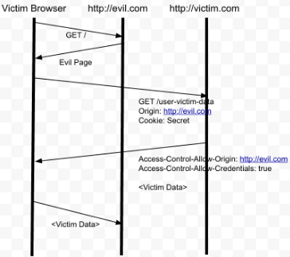

Reflect All
On several tests for different clients, we’ve found them simply reflecting any origin header into the access-control-allow-origin policy, in combination with allowing credentials. This is the worst possible CORS misconfiguration, as it effectively disables the Same-Origin Policy, but is usually implemented due to CORS limitation in the ability to specify multiple origins (Space delimited: origin1.com origin2.com is not allowed and wildcards are not allowed as part of a subdomain).
For example, a malicious person could set up a rogue site at www.evilpayload.com and using a phishing campaign to direct Secure Ideas users there. If those users are currently authenticated with api.professionallyevil.com, then www.evilpayload.com can make API calls to api.professionallyevil.com as those users. Meaning whatever sensitive data that API exposes to authenticated users can be harvested by any site those users visit (provided they have a valid cookie-based or HTTP auth-based session).

URL Parsing Errors
Some websites make classic URL parsing mistakes when attempting to verify whether an origin should be trusted. For example, a site which I'll call advisor.com trusts all origins that ended in advisor.com, including definitelynotadvisor.com.
Even worse, a second bitcoin exchange (let's call it btc.net) trusted all Origins that started with https://btc.net, including https://btc.net.evil.net. Unfortunately the site unexpectedly and permanently ceased operations before I could build a working proof of concept. I won't speculate as to why.
NULL Origin
If you were paying close attention earlier, you might have wondered what the 'null' origin is for. The specification mentions it being triggered by redirects, and a few stackoverflow posts show that local HTML files also get it. Perhaps due to the association with local files, I found that quite a few websites whitelist it.
GET /reader?url=zxcvbn.pdf
Host: docs.google.com
Origin: null
HTTP/1.1 200 OK
Acess-Control-Allow-Origin: null
Access-Control-Allow-Credentials: true
This is great for attackers, because any website can easily obtain the null origin using a sandboxed iframe:
<iframe sandbox="allow-scripts allow-top-navigation allow-forms" src='data:text/html,<script>*cors stuff here*</script>’></iframe>
This particular misconfiguration is surprisingly common - if you look for it, you'll find it. The choice of the keyword 'null' is itself a tad unfortunate, because failing to configure an origin whitelist in certain applications may result in...
Access-Control-Allow-Origin: null
Oops.
Breaking HTTPS
Failing to restrict the origin protocol. If a website is accessed over HTTPS but will happily accept CORS interactions from http://wherever, someone performing an active man-in-the-middle (MITM) attack can pretty much bypass its use of HTTPS entirely. Strict Transport Security and secure cookies will do little to prevent this attack. Check out the presentation recording when it lands for a demo of this attack.
Abusing CORS without credentials
Generally not a big issue. One notable exception is when the victim's network location functions as a kind of authentication. You can use a victim’s browser as a proxy to bypass IP-based authentication and access intranet applications. In terms of impact this is similar to DNS rebinding, but much less fiddly to exploit.